Вам будут предложены фрагменты живописных полотен. Ваша задача - ответить на вопросы, связанные с этими полотнами (Чаще всего - название и автора). Фрагменты будут обновляться-дополняться в течение всей недели.
Удачи!
Подсказка 1: См. фрагмент
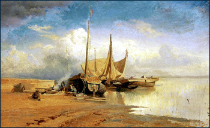
Подсказка 2: Волга в представлении автора немыслима без тяжкого бурлацкого труда.
Подсказка 3: Если вы еще не ответили на вопросы задания, может быть вам поможет портрет автора.
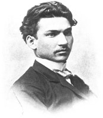
Подсказка 4: Материалом для этой картины стали впечатления от поездки автора на Волгу. Кстати, на Волгу автор ездил вместе с Ильей Репиным, который создал вскоре после этого одну из самых известных своих картин.
Подсказка 5: После смерти автора друзья сочинили эпитафию на его могилу:
=Щедро он был одарен
могучим и дивным талантом.
Чудною силою чувства и красок
владел он в искусстве.=
Ответ 1: Федор Васильев, =Вид на Волге. Барки=
Комментарий: http://www.centre.smr.ru/win/artists/vasil/daty_vasil.htm
http://www.centre.smr.ru/win/artists/vasil/biogr_vasil.htm
http://center.rusmuseum.ru/InetBookNew/vasyliev_pict.html
http://www.rusmuseum.ru/ru/collections/paintings/xix-xx/cd25.html
Подсказка 1: См. фрагмент
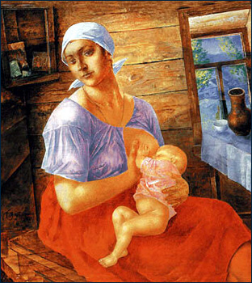
Подсказка 2: Автор еще одной картины с таким же названием получил за нее приз в Каннах.
Подсказка 3: Многим еще со школьной скамьи известен роман с таким же названием. Кстати, картина, о которой шла речь в предыдущей подсказке, была снята по мотивам именно этого романа.
Подсказка 4: Монументальным свидетельством творческой зрелости автора явилось знаменитое полотно "Купание красного коня".
Подсказка 5: Если вы еще не ответили на этот вопрос, загляните на сайт Третьяковской галереи.
Ответ 2: Кузьма Петров-Водкин. =Мать=
Комментарий: http://www.rusmuseum.ru/ru/collections/paintings/xix-xx/2/cd148.html
Подсказка 1: См. фрагмент
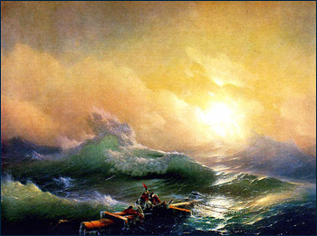
Подсказка 2: Автор этой картины принимал участие в десантных операциях русского флота.
Подсказка 3: Когда автор отмечал десятилетие своего творчества, поздравить его пришла целая эскадра кораблей российского черноморского флота во главе с адмиралом.
Подсказка 4: На одной из картин автора изображен великий русский поэт. Но изобразил его не автор.
Подсказка 5: Дом - музей автора находится в Феодосии.
Ответ 3: Иван Айвазовский. =Девятый вал=
Комментарий: http://www.rusmuseum.ru/ru/collections/paintings/xviii-xix/cd001.html
Подсказка 1: См. фрагмент
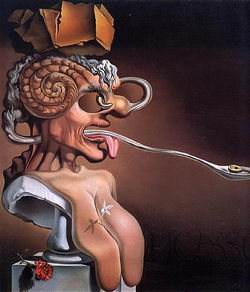
Подсказка 2: По словам автора на этом полотне можно увидеть все, что должно было случиться с живописью в 20 веке.
Подсказка 3: И эти два человека - автор и изображенный на картине - основательно приложили к этому руку.
Подсказка 4: Учитывая заслуги автора, король его страны издал Указ, в котором освободил его произведения от налогообложения.
Подсказка 5: Андре Бретон составил анаграмму из букв имени автора картины - «Avida Dollars»
Ответ 4: Сальвадор Дали. =Портрет Пикассо=
Комментарий: http://www.arthistory.ru/dali5.htm
Подсказка 1: См. фрагмент
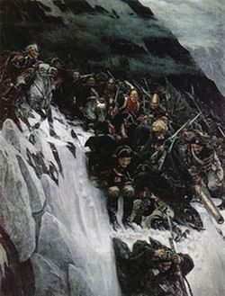
Подсказка 2: Недалеко от изображенного на картине места ежегодно собираются люди, чтобы отметить событие, отраженное в ее названии.
Подсказка 3: И совсем недавно это было сделано в 204-й раз.
Подсказка 4: Эпитафия на могиле главного героя картины состоит всего из трех слов.
Подсказка 5: Главного героя картины турки называли =Топал-паша=.
Ответ 5: Василий Суриков =Переход Суворова через Альпы в 1799 году=
Комментарий: http://www.arthistory.ru/surikov2.htm
Подсказка 1: См. фрагмент
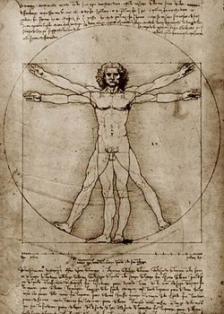
Подсказка 2: Автор нам известен не только как художник.
Подсказка 3: Но, среди всех искусств, да, пожалуй, среди всех дел человеческих он поставил на первое место живопись.
Подсказка 4: Но это не помешало ему придумать парашют, танк и вертолет.
Подсказка 5: Загадка самой знаменитой его картины до сих пор вызывает споры искусствоведов, криминалистов и врачей.
Ответ 6: Леонардо да Винчи
Комментарий: http://www.arthistory.ru/leonardo5.htm
Подсказка 1: См. фрагмент
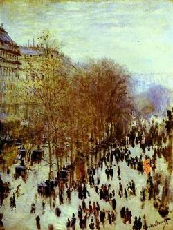
Подсказка 2: Улица, которую вы видите на картине, стала знаменитой чуть более 100 лет назад.
Подсказка 3: А человек с этой улицы был первый на Диком западе.
Подсказка 4: Автор картины является =крестным отцом= целого течения в искусстве.
Подсказка 5: Записывая фамилию автора, не ошибитесь в написании второй буквы.
Ответ 7: Клод Моне. =Бульвар капуцинов в Париже=
Комментарий: http://www.arthistory.ru/mone2.htm
Подсказка 1: См. фрагмент
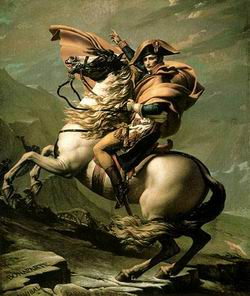
Подсказка 2: Свой единственный пейзаж автор написал когда находился в заключении.
Подсказка 3: Закончив Академию живописи и скульптуры, автор немало способствовал ее закрытию.
Подсказка 4: Правители не только сажали автора в тюрьму. Бывал он и придворным живописцем.
Подсказка 5: Но жизнь свою автор закончил в изгнаниии, в Брюсселе.
Ответ 8: Жак Луи Давид. =Наполеон на Святом Бернарде=
Комментарий: http://www.arthistory.ru/david3.htm
Подсказка 1: См. фрагмент
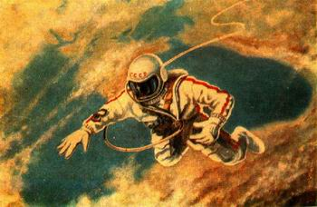
Подсказка 2: Художник, писатель, генерал, обладатель множества наград СССР и других государств... все это об авторе этой картины.
Подсказка 3: Действие, изображенное на картине, автор совершил первым.
Подсказка 4: Название картины точно соответствует местоположению наблюдателя.
Подсказка 5: Недавно ко всем перечисленным в подсказке 1 определениям автора картины прибавилось еще одно - банкир.
Ответ 9: Алексей Леонов. =Над Черным морем=
Комментарий: http://www.pmicro.kz/Liter/SFFlib/ART_SFF/C01037.STM
http://nmsf.sscc.ru/Welcome.asp?vw=book&bo=1506
Подсказка 1: См. фрагмент
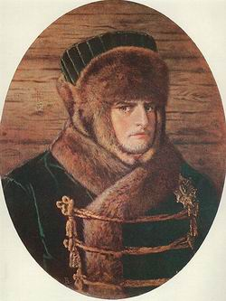
Подсказка 2: Живя на берегу Шексны, автор задумал создать большую картину, в которой хотел показать тяжелый труд бурлаков.
Подсказка 3: Мы часто видели изображение этого человека на других картинах, но в таком виде он вряд ли изображен еще где-то.
Подсказка 4: Если вы до сих пор не догадались, кто изображен на картине, посмотрите на портрет ее автора.
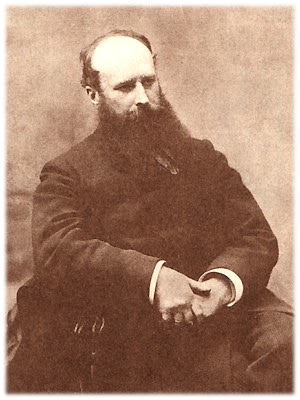
Подсказка 5: Константин Симонов посвятил автору этой картины строки:
Всю жизнь любил он рисовать войну.
Беззвездной ночью наскочив на мину,
Он вместе с кораблем пошел ко дну,
Не дописав последнюю картину...
Ответ 10: Верещагин. =Наполеон в зимнем одеянии=
Комментарий: http://www.museum.ru/museum/1812/Painting/ver/index.html